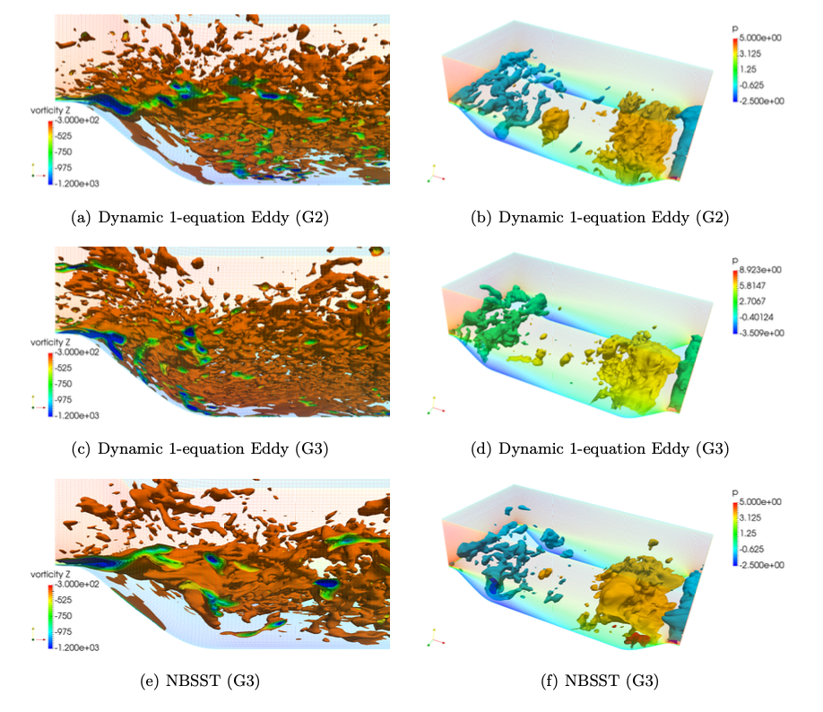
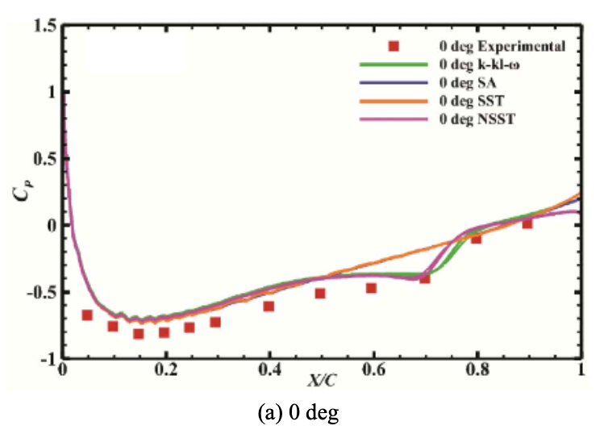
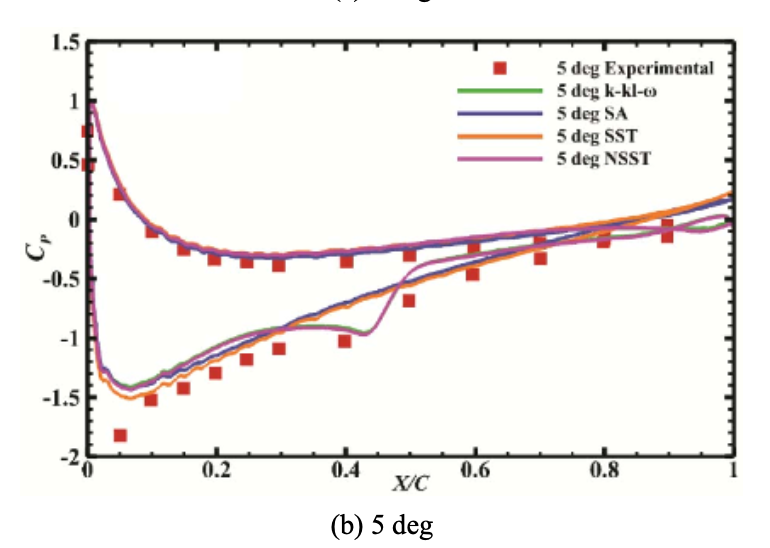
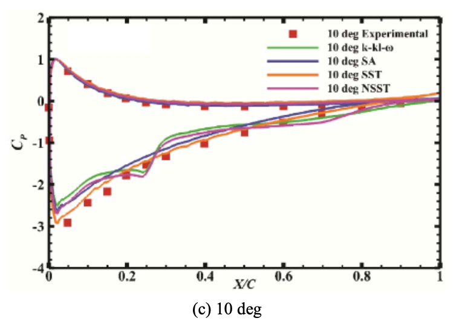

Turbulence is often called the last great unsolved problem in classical physics. For engineers and researchers, the challenge isn't just understanding it — it's about simulating it without breaking the bank. My undergraduate and masters research focused on finding that middle path of flow simulations: Hybrid RANS-LES modeling.
When we simulate fluid flow, we usually have two traditional choices. On one hand, Direct Numerical Simulation (DNS) or Large Eddy Simulation (LES) are incredibly accurate but so computationally expensive that it's often impossible for real-world engineering problems (consider simulating wind changes over a city of size 100km x 100km x 500m where buildings can be of meters scale and the atmospheric boundary layer can have featurs of centimeter-scale). On the other hand, Reynolds-Averaged Navier-Stokes (RANS) models are fast but often fail to accurately predict complex, massively separated flows (consider forces experienced by building that depend on accurate modelling of flow separation behind them).
My work explored Hybrid RANS-LES methods, which aims to provide the best of both worlds:
At Reynolds numbers of 1 million, these hybrid methods can reduce the cost of a pure LES simulation by 100 times. That's the difference between a simulation taking a weekend versus taking several months.
A major focus of my research published in the article "Investigation of the sensitivity of turbulent closures and coupling of hybrid RANS-LES models for predicting flow fields with separation and reattachment" is the sensitivity of these models to how they are "coupled" and the effect of changes in grid resolution across the simulation domain.
Traditional Linear Eddy-Viscosity Models (LEVM) often struggle at the RANS-LES interface, incorrectly predicting the anisotropy of Reynolds stresses. There are also problems called modeled stress depletion and grid induced separation in the simulated flow. My research proposed a generic non-linear blended framework to fix these issues.
| Feature | Linear Hybrid Models | Non-Linear Hybrid Models |
|---|---|---|
| Grid Sensitivity | Highly sensitive; results can deteriorate on coarse grids. | Less sensitive; more robust across different resolutions. |
| Prediction Accuracy | Can struggle with separation/reattachment points. | Significant improvement in mean and instantaneous flow fields. |
| Flow Dynamics | Under-predicts energy in higher modes. | Better captures energy distribution and backscattering. |
It's not enough to just get the "mean" flow right; we need to know if the physics of the energy transfer is correct. In my another article in 2017 "Investigation of flow structures in a turbulent separating flow using hybrid RANS-LES mode", I utilized Proper Orthogonal Decomposition (POD) to resolve unsteady flow structures.
Using POD, I demonstrated that our non-linear model (NBSST) was able to predict an energy distribution very similar to highly resolved LES, even when using a significantly coarser grid. This proves that we can achieve high-fidelity results without the "high-fidelity" price tag.
Can these models handle the stress of high Reynolds number applications? I tested the NSST-Blended model (NBSST) at Reynolds numbers up to 100,000. Even on relatively coarse grids, the model provided qualitatively accurate trends that matched experimental observations, showing that the separation past a hill crest increases as the Reynolds number goes up.

While hybrid methods excel at high Reynolds numbers, another collaborative work published in "Prediction of separation induced transition on thick airfoil using non-linear URANS based turbulence model" addresses a different challenge: Separation-Induced Transition at lower Reynolds numbers.
By applying a Non-linear URANS model to a thick NACA 0021 airfoil, we achieved a breakthrough in predicting the Laminar Separation Bubble (LSB). Where standard models like Spalart-Allmaras failed to detect the bubble at all, our non-linear approach matched the accuracy of specialized transition models while being computationally efficient.



After testing across various scenarios—from periodic hills to bluff bodies like square and rounded cylinders—the conclusions are clear:
Computational fluid dynamics is a game of trade-offs, but with the right hybrid approach, we're getting closer than ever to a perfect balance of speed and accuracy.
For a deep dive into the data and methodology, you can explore my published work: